KM03 — Positive aur Negative Numbers, zero ke aage peeche?
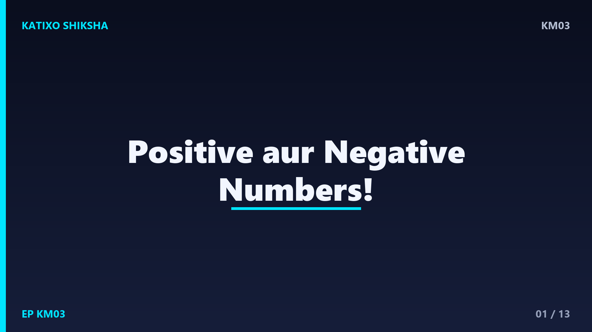
Slide 1Namaste बच्चों! Katixo KhojLab me तुम्हारा फिर से स्वागत है! आज हम एक बहुत ही मज़ेदार चीज़ सीखेंगे: positive aur negative numbers. सोचो सर्दियों में पहाड़ों पर temperature कभी-कभी zero से भी नीचे चला जाता है, जैसे माइनस 5 degree. ये माइनस वाला number ही negative number है! zero के एक तरफ होते हैं positive numbers और दूसरी तरफ negative. आज हम ये पूरा खेल समझेंगे, step by step. तो तैयार हो जाओ, चलो शुरू करते हैं!
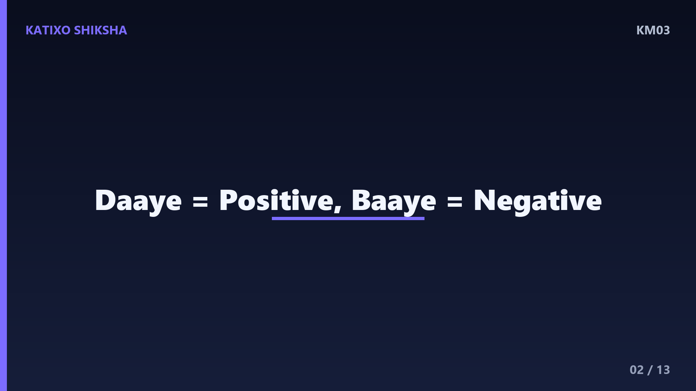
Slide 2सबसे पहले समझो zero यानी शून्य, जो बीच में खड़ा है हमारा राजा. zero के दाईं तरफ होते हैं positive numbers, यानी 1, 2, 3, 4 और आगे. इन्हें हम धन संख्या कहते हैं. zero के बाईं तरफ होते हैं negative numbers, यानी माइनस 1, माइनस 2, माइनस 3 और पीछे. इन्हें ऋण संख्या कहते हैं. positive के आगे plus नहीं भी लिखें तो चलता है, पर negative के आगे माइनस का चिन्ह हमेशा लगता है, बच्चों!
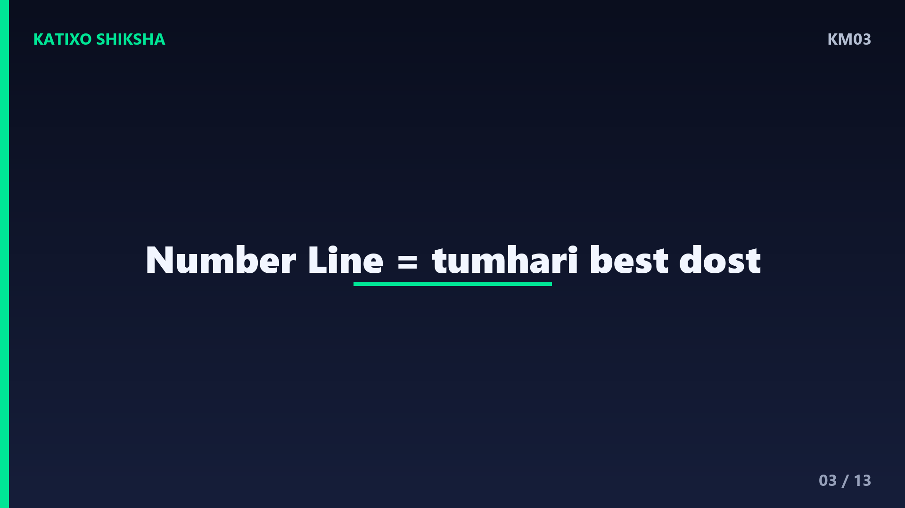
Slide 3अब इसे समझने का सबसे आसान तरीका है number line, यानी संख्या रेखा. सोचो एक लंबी सीधी रेखा, बीच में zero. zero से दाईं तरफ बढ़ो तो numbers बड़े होते जाते हैं: 1, 2, 3. zero से बाईं तरफ बढ़ो तो numbers छोटे होते जाते हैं: माइनस 1, माइनस 2, माइनस 3. जितना बाईं तरफ जाओगे, number उतना ही छोटा. ये number line तुम्हारी सबसे अच्छी दोस्त है, इसे हमेशा दिमाग में रखो!
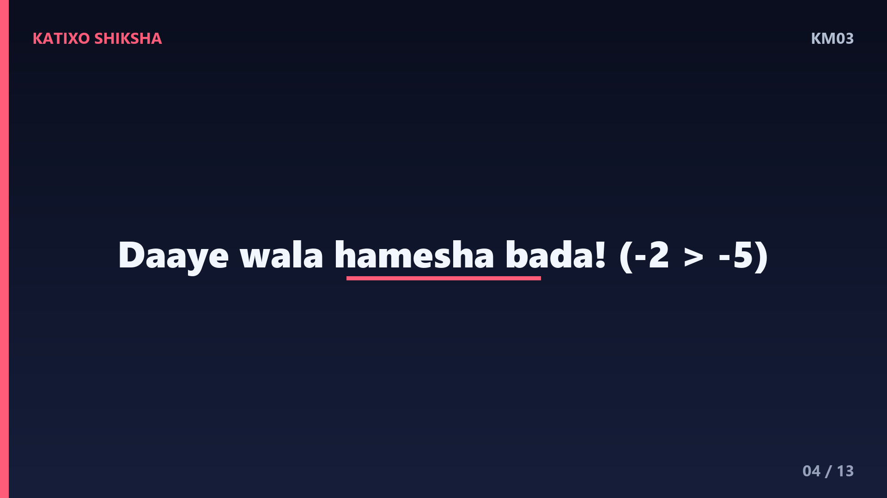
Slide 4एक बहुत मज़ेदार बात याद रखो बच्चों. number line पर जो भी number दाईं तरफ होता है, वो बड़ा होता है. इसलिए हर positive number, हर negative number से बड़ा होता है. और zero सबसे बीच में है, तो हर negative number, zero से छोटा है. एक और मज़ेदार बात: negative में जितना बड़ा अंक दिखता है, number उतना ही छोटा होता है. जैसे माइनस 5, माइनस 2 से छोटा है! ये उल्टा खेल है, ध्यान से समझना!
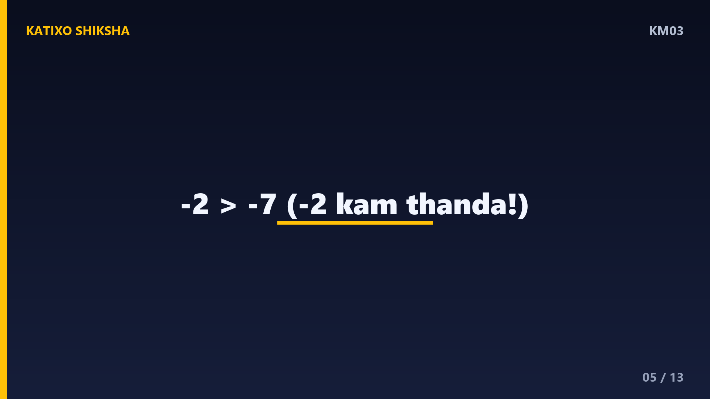
Slide 5चलो पहला worked example करते हैं. कौन बड़ा है, माइनस 2 या माइनस 7? number line सोचो. zero से बाईं तरफ पहले आता है माइनस 2, फिर और दूर आता है माइनस 7. जो दाईं तरफ है वो बड़ा होता है, तो माइनस 2 बड़ा है माइनस 7 से! सोचो ठंड में, माइनस 2 degree, माइनस 7 degree से कम ठंडा है यानी ज़्यादा गरम. इसलिए माइनस 2 बड़ा हुआ. बच्चों, हमेशा number line की मदद लो!
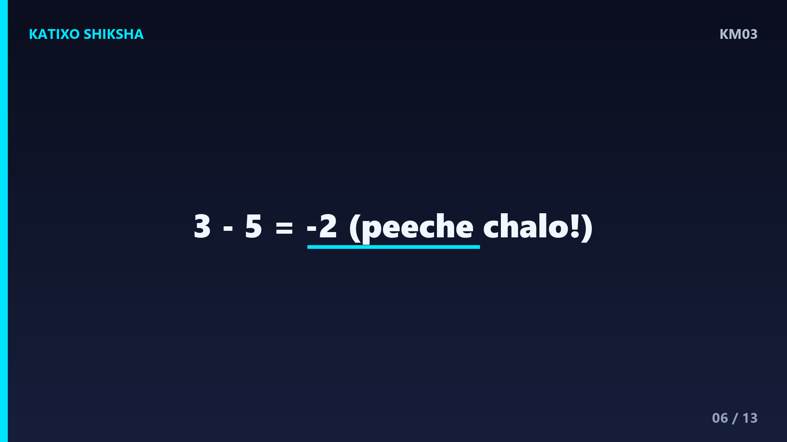
Slide 6अब दूसरा worked example, जोड़ का. positive में आगे बढ़ो, negative में पीछे जाओ. सोचो तुम zero पर खड़े हो और 3 कदम दाईं तरफ चलो, तो तुम पहुँचे 3 पर. अब वहाँ से 5 कदम बाईं तरफ चलो, यानी माइनस 5. तीन में से पाँच पीछे जाओगे तो तुम पहुँचोगे माइनस 2 पर! तो 3 घटाओ 5 बराबर माइनस 2. देखा बच्चों, जब बड़ा number घटाते हैं छोटे में से, तो answer negative आता है!
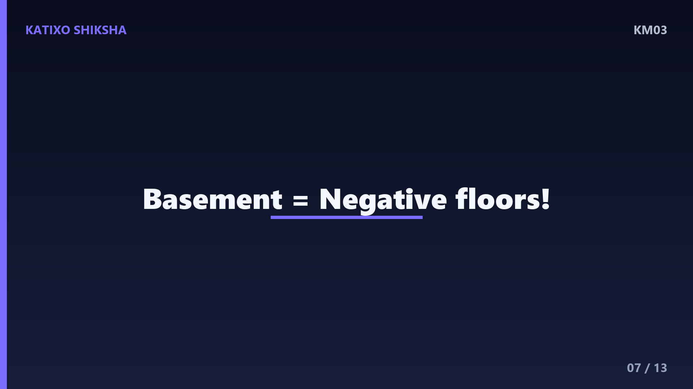
Slide 7अब एक मज़ेदार रोज़ की मिसाल. lift यानी elevator के बारे में सोचो. ground floor है zero. ऊपर की मंज़िलें हैं positive: पहली, दूसरी, तीसरी. और नीचे parking वाली basement मंज़िलें हैं negative: माइनस 1, माइनस 2. अगर तुम दूसरी मंज़िल पर हो और 4 मंज़िल नीचे जाओ, तो तुम पहुँचोगे माइनस 2 पर, यानी basement! देखा, negative numbers असल ज़िंदगी में कितने काम आते हैं, बच्चों!
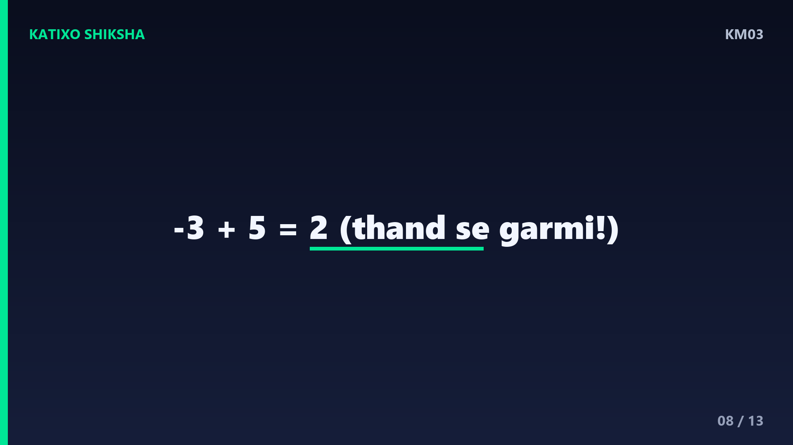
Slide 8अब तीसरा worked example, थोड़ा ठंडा वाला! रात को temperature था माइनस 3 degree. सुबह धूप निकली और temperature 5 degree बढ़ गया. अब temperature कितना होगा? number line पर माइनस 3 से शुरू करो, फिर 5 कदम दाईं तरफ बढ़ो. माइनस 3, माइनस 2, माइनस 1, zero, 1, और 2! तो नया temperature है 2 degree. यानी माइनस 3 जोड़ 5 बराबर 2. ठंड से गरमी की तरफ, मज़ेदार है ना!
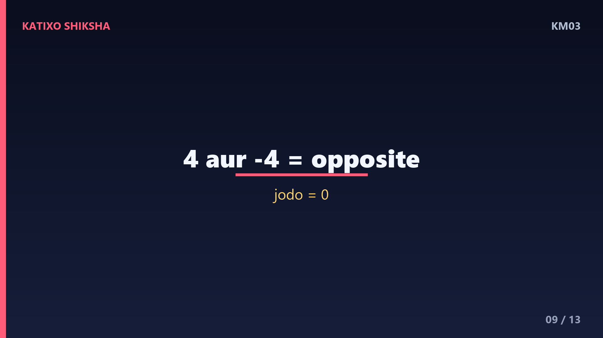
Slide 9एक और ज़रूरी बात, opposite numbers के बारे में. हर positive number का एक negative जुड़वाँ होता है, जो zero से बराबर दूरी पर होता है. जैसे 4 और माइनस 4, दोनों zero से चार कदम दूर हैं, बस अलग-अलग तरफ. इन्हें कहते हैं opposite numbers या विपरीत संख्याएँ. और सबसे मज़ेदार: अगर तुम 4 और माइनस 4 को जोड़ दो, तो answer आता है zero! क्योंकि चार कदम आगे और चार कदम पीछे, तो तुम वापस zero पर!
Slide 10अब समय है तुम्हारी बारी! Chalo try karein! तीन सवाल हैं, video रोको aur copy me हल करो. पहला: कौन बड़ा है, माइनस 4 या माइनस 1? दूसरा: माइनस 2 जोड़ 6 कितना होता है? तीसरा: 4 का opposite number क्या है? जल्दबाज़ी मत करना, number line दिमाग में बनाना. हो गया? शाबाश! अब अगली slide पर answers देखते हैं. खुद से कोशिश करना सबसे ज़रूरी है, बच्चों!
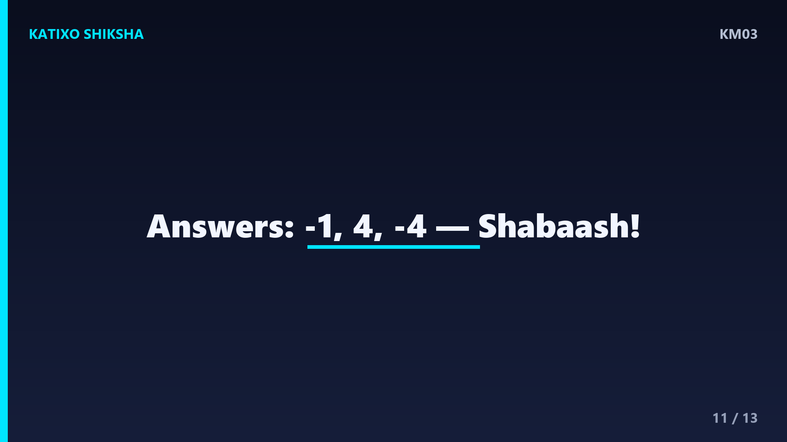
Slide 11चलो answers मिलाते हैं! पहला: number line पर माइनस 1 दाईं तरफ है माइनस 4 से, इसलिए माइनस 1 बड़ा है! दूसरा: माइनस 2 से शुरू करो, 6 कदम दाईं तरफ बढ़ो, तो पहुँचते हो 4 पर, यानी माइनस 2 जोड़ 6 बराबर 4! तीसरा: 4 का opposite number है माइनस 4, क्योंकि दोनों zero से बराबर दूरी पर हैं. कितने सही हुए बच्चों? जो गलत हुए, उन्हें number line से फिर समझो!
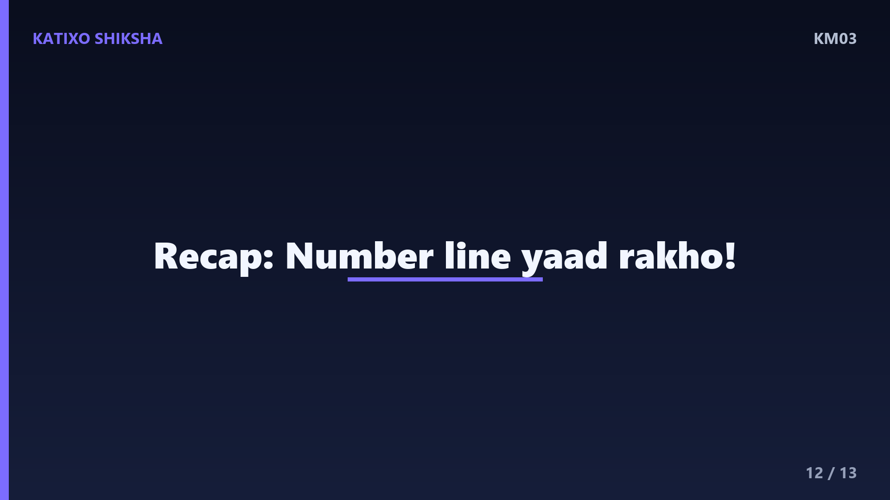
Slide 12चलो अब पूरा recap करते हैं! zero के दाईं तरफ positive numbers, बाईं तरफ negative numbers. number line पर जो दाईं तरफ हो वो बड़ा होता है, इसलिए positive हमेशा negative से बड़ा. जोड़ने में दाईं तरफ बढ़ो, घटाने में बाईं तरफ जाओ. हर number का एक opposite होता है, और opposite को जोड़ो तो zero मिलता है. बस इतना सा याद रखो aur तुम negative numbers के master बन जाओगे, बच्चों!
Slide 13शाबाश बच्चों! आज तुमने positive aur negative numbers सीख लिए, zero के आगे-पीछे का पूरा खेल! रोज़ थोड़ी-थोड़ी practice करते रहना, lift के buttons और मौसम का temperature देखना, फिर ये सवाल खेल जैसे लगेंगे. अगर मज़ा आया तो Katixo KhojLab subscribe karo, like करो aur bell दबाओ ताकि हर नया मज़ेदार lesson सबसे पहले तुम तक पहुँचे! अगली बार एक नए topic के साथ मिलेंगे. तब तक सीखते रहो, मुस्कुराते रहो. Shabaash, milte hain agle episode me!